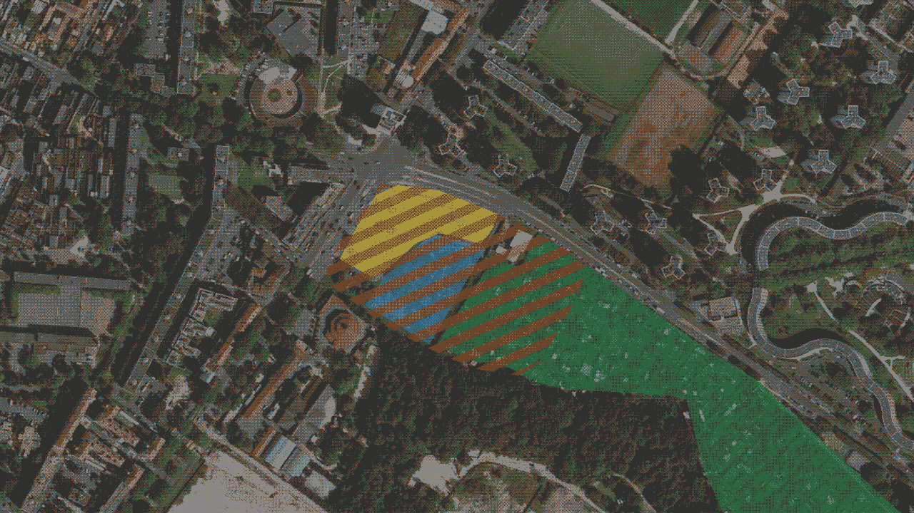
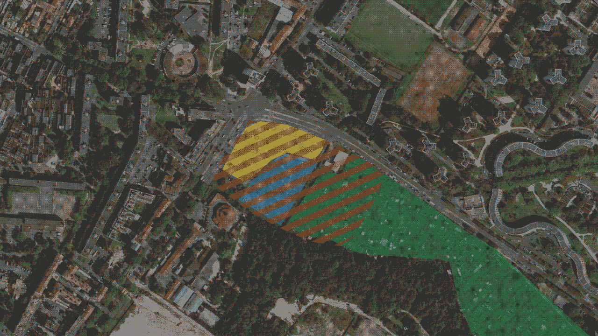

Choux pour choux
2021
Projet de design global en groupe :
Design graphique : Hildegarde Saillard
Design d’espace : Chloé Lescanne
Design mode : Alicia Foy
Design produit : Amaury Hardré
Sous la direction d'Aurélia Martin, Patricia Collinet et Simon Hayer
Les jardins ouvriers d’Aubervilliers, un des derniers espace non bétonné, sont menacés par la construction d’une piscine pour les JO de Paris 2024. Afin d’aider les jardiniers à préserver ce lieu, nous avons décidé d’utiliser le chou d’Aubervilliers comme symbole de lutte et ainsi élaborer des outils. Nous avons conçu un calendrier d’actions permettant l’occupation progressive du parking attenant aux jardins et ainsi mettre en place une ZAD ouverte aux habitants. Ainsi chaque jour des structures sont érigées pour occuper l’espace et faire croître les jardins sur le béton.
 

contact
ah!
fr